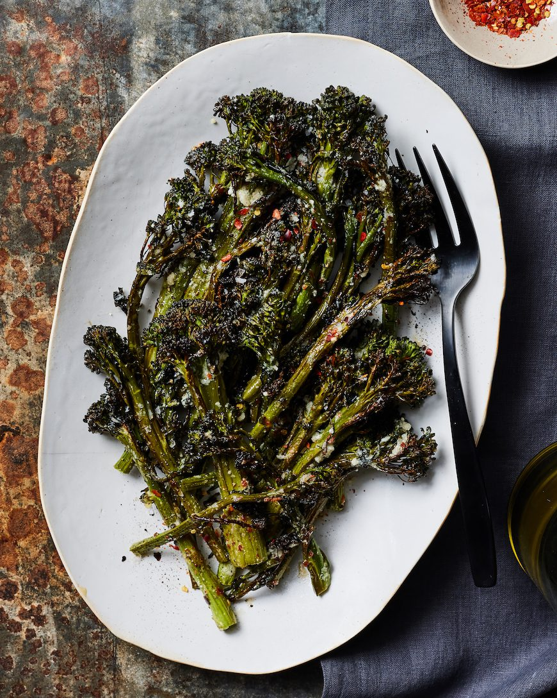

Roasted Broccolini with Garlic, Lemon, and Parmesan

Description
This roasted broccolini is going to be your new favorite side dish! It will for sure be making an appearance
on this years holiday table and basically every other weeknight when these is broccolini in my fridge.
Also, if you have leftovers, it's delicious to throw on top of some pasta, in a quinoa bowl, or just re-heat
it in the oven for a few minutes and add it to some chicken bolognese.
Ingredients
- 6-8 heads broccolini split into florets
- 8 tablespoons olive oil, divided
- Kosher salt and freshly cracked black pepper to taste
- 1/2 cup freshly grated Parmesan cheese
- 4 cloves garlic, finely minced
- 2 lemon, juiced and zested
- 1 teaspoon red pepper flakes
Steps
- Preheat oven to 450 degrees Farenheit. Line a baking sheet with parchment paper. Spread the broccolini
evenly on the baking sheet and drizzle with 2 tablespoons of olive oil. Using tongs, gently toss
the florets in the oil to combine and season with salt and pepper and red pepper flakes.
- Transfer the baking sheet into the oven and roast for 25-35 min until the broccolini is just
golden and slightly crispy.
- While the broccolini is roasting, combine the remaining olive oil, garlic, red pepper flakes, lemon
zest and juice and parmesan. Whisk to combine and season with salt and pepper to taste.
- Remove the baking sheet from oven and drizzle the dressing on top. Toss to combine and serve as needed.